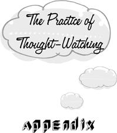

{% include JB/setup %}
{% raw %}
<div>

<div id="filepos256649" class="calibre31"><blockquote class="calibre2">
<h1 class="calibre19" id="calibre_pb_31"><span class="calibre20"><span class="bold"><a class="calibre21"></a><a class="calibre21"></a></span></span></h1><div class="calibre16"> </div>
<p class="calibre22">                 <a class="calibre23"></a><a class="calibre23"></a>he previous chapters have been devoted mainly to helping the reader detect and identify mental traps in everyday life. Unlike bird-watching, jogging, building a sailboat, or learning to speak a foreign language, this project makes no demand on our time whatever. The enterprise of trap identification slips easily into even the busiest schedule because it takes place <em class="calibre9">at the same time</em> as our other activities. We don’t need to diminish the number of hours we put in at the office, or give up a moment’s rest or recreation. In fact, it’s our customary work and play that provides us with the arena for our investigations. Here is the perfect hobby! An overexclusive concern with high-fidelity audio equipment or golf may impoverish the rest of our life; but we can become mental-trap fanatics without narrowing the range of our interests, activities, and sympathies in the least.</p>
<p class="calibre22">There is, however, a special exercise that can hasten our progress. Of course, being in a hurry to get rid of traps is itself a trap. But when there’s <a class="calibre23"></a>no pressing business or alluring pleasure over the horizon—when we have “time on our hands”— some of that time may profitably be devoted to the practice of <em class="calibre9">thought-watching.</em> The only equipment needed for thought-watching is a spot reasonably free of external distractions. The instructions couldn’t be simpler: we sit quietly and watch our thoughts. That’s all. In thought-watching, we don’t try to think about anything in particular; but neither do we try to block or interfere with the thoughts that happen to arise. We just watch, as if at a movie.</p>
<p class="calibre22">Almost as soon as we begin this exercise, we learn an important lesson about the mind: <em class="calibre9">thoughts arise by themselves, even if we don’t strive to will them into existence.</em> This truth can be deduced indirectly from our earlier discovery that thinking is often unconscious: obviously, we can’t be willing our ideas into existence when we’re unaware of them. But in thought-watching, we can observe in the full light of consciousness how thoughts come and go by themselves without the benefit of our assistance. To be sure, we <em class="calibre9">can</em> also exert a volitional influence on the stream of ideas. But the stream doesn’t automatically dry up as soon as we cease to exert ourselves. <a class="calibre23"></a>Thoughts continue to flow even when we stop pushing them into being from behind.</p>
<p class="calibre22">But this is only a preliminary observation. Sooner or later, every mental trap encountered in daily life also makes its appearance when we simply sit and watch our thoughts. And because we’ve temporarily suspended our competing interests, we are keener observers. Thought-watching is especially useful for learning to detect the momentary lapses into trapped thinking that are too fleeting to lay hold of in the heat of daily life. But thought-watching doesn’t render the examination of daily life superfluous. It’s only while we’re immersed in the business of living that we commit the longer versions of each trap that consume us for hours, days, or even years at a time. Even here, however, the sensitization that results from thought-watching greatly improves the quality of our observations of daily life.</p>
<p class="calibre22">Fifteen or twenty minutes of thought-watching, practiced more or less daily, will quickly lead to some remarkable discoveries about our mental machinery. The novice thought-watcher will find, however, that thought-watching seems to be a difficult business. Actually, nothing could be easier. But at the <a class="calibre23"></a>beginning we spend very little of our thought-watching time actually watching our thoughts. Instead we try to <em class="calibre9">control</em> the flow of thought—to make it flow in one direction or another, or to suppress it altogether. Of course we can’t simultaneously control our thoughts and just watch them emerge. The attempt to follow this contradictory program makes us increasingly tense. This is why the exercise appears to be difficult.</p>
<p class="calibre22">All this is just as it should be. For it’s precisely at the moment when we leave off thought-watching and start to control that we fall into a trap. The traps don’t simply pop into the range of our observing consciousness amidst other, non-traplike ideas. We <em class="calibre9">commit</em> them. So long as we’re engaged in the enterprise of thought-watching, all intentional meddling with the flow of thought—mental “work” on any project whatever—is a trap. Strictly speaking, the traps don’t come up <em class="calibre9">while</em> we’re thought-watching, but rather when we cease to follow the instructions.</p>
<p class="calibre22">This isn’t to say that we should never try to control our thoughts. On the contrary, exercises to improve our control were discussed in the chapter on division. But we also have to learn to <em class="calibre9">relinquish</em> control when it’s appropriate to do so. If we’ve <a class="calibre23"></a>decided to watch our thoughts, control is useless by definition. <em class="calibre9">In this situation</em>, every attempt at control is a superfluous mental episode, i.e., a trap. This is what makes thought-watching so instructive: when no work at all is called for, we observe with great clarity the various ways in which we invent make-work for ourselves.</p>
<p class="calibre25">Let’s see how the simplest trap, <em class="calibre9">persistence</em>, arises in the course of thought-watching. Having begun to watch, we may at first observe our ideas coming and going by themselves, just as the exercise requires. We’re aware of the ticking of a clock. A scene from the past flashes before our eyes. Our nose itches. And that’s that. Ideas of this kind arise and fall away without leaving a trace, “like birds flying across a cloudless sky.” They’re <em class="calibre9">self-contained</em> in the sense that they carry with them no requirement for further thinking. But it isn’t long before we try to lasso one of our mental birds and use it for a mount. Having heard the ticking of a clock, we wonder what time it is; a scene from the past having flashed before us, we ask ourselves whether it really happened that way. And immediately we set to work on the problem. The project that grabs hold of us may be entirely <a class="calibre23"></a>inane—we think of Snow White and start to reconstruct the list of the seven dwarfs. At this time, the quality of our mental functioning changes completely. We are interfering in the flow of ideas with a definite purpose of our own. We’re no longer thought-watching.</p>
<p class="calibre22">Of course, we can choose to find out what time it is, or reconstruct the past, or name the dwarfs <em class="calibre9">instead of</em> watching our thoughts. But let’s assume that we don’t really want to be counting dwarfs—that, in fact, we want to be thought-watching. Let’s assume that it’s entirely clear to us that we’ll be none the worse for abandoning the dwarf project altogether. Nevertheless, having inadvertently begun the dwarf project, we find ourselves impelled to continue with it. Having thought of five of the dwarfs’ names, it’s hard for us to return to thought-watching until we come up with the missing two. That is to say, it’s difficult not to <em class="calibre9">persist.</em> We had intended to sit down and just watch our thoughts; but instead we engage in a vigorous and pointed search through our stock of personal adjectives ending <em class="calibre9">in y.</em></p>
<p class="calibre22">The topics we get stuck on when we are watching our thoughts are not uniformly pointless. Often we begin to think about issues that do <a class="calibre23"></a>have relevance to our life, but that can safely be postponed until after the thought-watching session is over. In this case, we fall into the trap of <em class="calibre9">anticipation.</em> We designate a period of time for doing nothing but watching our thoughts; we clear the mental boards of all outstanding and pressing business, satisfying ourselves that there’s no issue in our life that would suffer from a quarter-hour’s postponement; and then we start. But it isn’t long before one of these future issues lays hold of our attention. We begin to think about the dinner plans that we will have to make before the day is out, or the momentous vocational decision that we’ll have to face within the month, or the perfect holiday that we’re going to take some day. It may be clear beyond a shadow of a doubt that we don’t stand to benefit by taking up these issues <em class="calibre9">now</em>, in the middle of thought-watching, rather than fifteen minutes later. And yet we do it anyway.</p>
<p class="calibre22">In these examples of persistence and anticipation, the content of our trapped thinking is indistinguishable from what might occur in daily life. The only difference is that we’re likelier to detect the trap because we aren’t busy doing anything else. We’re like naturalists sitting quietly behind <a class="calibre23"></a>a bush, field glasses in hand. If we wait patiently enough, all the traps of daily life will make their appearance. We will persist, anticipate, revert to past grievances, formulate attitudes toward issues that don’t concern us, accelerate breathlessly toward conclusions for which there is no pressing need … In daily life, we can only cast a sideward glance at these fabulous beasts as we pass them by, for we’re always on one mission or another. But when we’re thought-watching, we can observe them at our leisure and fully relish their astonishing properties.</p>
<p class="calibre22">These denizens of daily life aren’t the only creatures to be observed in thought-watching, however. They constitute only the first and most obvious circle of trapped thinking. Once we become aware of them, we usually initiate various maneuvers that are designed to banish them from our mind. <em class="calibre9">These attempts to extricate ourselves and return to thought-watching invariably result in subtler versions of each trap.</em> We end up traveling from one trap to another and back again, with no exit in sight. A sequence may begin with any of the familiar trapped ideas of daily life. For illustrative purposes, let’s suppose that we sit down to watch our thoughts and <a class="calibre23"></a>catch ourselves persisting in the construction of a list of Snow White’s dwarfs.</p>
<p class="calibre22">Once we realize that we’ve been persisting, we may complain of our failure to thought-watch properly: “I’ve messed it up again!” Of course, telling ourselves that we have messed it up does not undo the fact that we’ve messed it up, nor does it yet get us on the right track. By complaining about an event that is irretrievably finished, we only exchange our persistence for the trap of <em class="calibre9">reversion.</em> Instead of uselessly thinking about the dwarf list, we’re now thinking uselessly about the fact that we’ve been thinking uselessly! And when we realize that our reversionary ideas still don’t bring us back to thought-watching—that we mess it up again by thinking that we’ve messed it up—we may revert to the reversion: “I’ve messed it up!—and now I’ve messed it up again!” Now we’re face-to-face with an awesome infinite regress in which each lamentation of a past failure gives us cause to lament again: “I’ve messed it up again—and again—and again … !” The only way out of the labyrinth is to drop the issue entirely—to permit one of our successive failures to pass without comment.</p>
<p class="calibre22">Alternatively (or additionally) we may try to <a class="calibre23"></a>sustain thought-watching by perpetually reminding ourselves of what we’re doing. We think: “I’m thought-watching—just thought-watching— nothing else.” It’s as though we were trying to keep our incipient ideas about competing projects at bay by calling out the name of what we want to be doing. But <em class="calibre9">telling</em> ourselves that we’re thought-watching is not yet thought-watching. It’s <em class="calibre9">formulation.</em> It’s easy to fool ourselves, however. After a few moments of high-quality thought-watching, we may even say to ourselves, <em class="calibre9">“Now</em> I’m really doing it!”—without realizing that we cease to be really doing it as soon as we have that thought. When we catch ourselves in this subtle variety of formulation, we may once again take the first step toward an infinite regress by thinking, “That’s formulation,” as though naming the beast were the same as vanquishing it. But of course naming the formulation is just formulation over again: “That’s formulation—and so is that—and so is that …”</p>
<p class="calibre22"><em class="calibre9">Regulation</em> isn’t very different from formulation here. Instead of trying to drown out the intrusive dwarf project by invoking the name of thought-watching, we legislate ourselves back to our appointed task: “Get back to thought-watching!” Of course, laying down the law that <a class="calibre23"></a>we must thought-watch is still not the same thing as watching our thoughts; and if we remain busy pushing ourselves around for the entire session— “Just keep watching! Stop persisting! None of that! Just watch!”—we won’t have watched our thoughts at all. Furthermore, when we come to appreciate the futility of regulating our thought-watching, we’re apt to start making regulations against regulating. A typical sequence might go like this:</p>
<div class="calibre7"><blockquote class="calibre2"><span class="calibre3">
<p class="calibre24">Sneezy … Dopey … That’s persistence. Stop persisting. Just watch thoughts. But that’s regulation. Stop regulating. Just watch thoughts. But that’s still regulation. Stop regulating …</p>
</span></blockquote></div><div class="calibre5"> </div>
<p class="calibre24">How do we get out of a vicious circle of this kind? Nothing could be simpler: instead of <em class="calibre9">telling</em> ourselves to stop regulating and just watch thoughts, we need only stop regulating and just watch thoughts.</p>
<p class="calibre22">Another strategy for vanquishing intrusive projects is to tell ourselves that we will postpone their consideration until after the thought-watching session is over. But to decide <em class="calibre9">now</em>, <a class="calibre23"></a>when we already know what to do for the next quarter-hour, what we will do <em class="calibre9">next</em> is a <em class="calibre9">one-step anticipation.</em> We’ve already realized that it’s unnecessary to complete the dwarf list at this time; but we don’t yet see that it’s equally unnecessary to decide, at this time, <em class="calibre9">when</em> we will complete it or whether we’ll complete it at all. Here again we may suffer from a piling up of one trapped idea upon another. When we come to understand that “I’ll do it after thought-watching” is anticipatory, we tell ourselves that we needn’t decide now when to do it—that we will consider the problem of when to do it after thought-watching is over. But this idea commits again the very trap it wishes to disavow. We needn’t decide now when to complete the dwarf list, <em class="calibre9">and</em> we needn’t decide now when to decide.</p>
<p class="calibre22">After the dizzying spirals of reversion, formulation, regulation, and anticipation, it’s refreshing to contemplate the simpleminded obtuseness that causes us to <em class="calibre9">accelerate</em> during thought-watching. As in the previous cases, we look in at the moment we catch ourselves persisting in the construction of a useless dwarf list. Wishing to get back to thought-watching, we may berate ourselves for our failure (reversion), tell ourselves what we are <a class="calibre23"></a>supposed to be doing (formulation), order ourselves back to work (regulation), or reschedule the intrusive project for a later time (anticipation)—all of which are as different from thought-watching as the original persistence was. Another strategy is to try to rush through the intrusive project as rapidly as possible so that we may sooner return to thought-watching. That is, we add the trap of acceleration to our original persistence. Now we are not only thinking about the dwarf list. We are also thinking about the <em class="calibre9">end</em> of the dwarf project— about how desirable it is to reach the end, how close we are to the end, and so on. Our concern with finishing as quickly as possible is a <em class="calibre9">second</em> intrusive project that takes us even further away from the attitude of thought-watching. In addition to ideas like “Dopey” and “Isn’t there one that starts with an <em class="calibre9">M?”</em> we’re also thinking, “Only two more to go and I’ll be done!”</p>
<p class="calibre22"><em class="calibre9">Fixation</em> is a marvelously subtle phenomenon of thought-watching. At first glance, it may even seem that the occasion of thought-watching is incompatible with its occurrence. Since we don’t have a future goal in mind, what is there for us to wait for? What we often wait for in thought-watching is <em class="calibre9">the end of the thought-watching session.</em>
<a class="calibre23"></a>Instead of just watching our thoughts, we conceive of ourselves as engaged in a mental exercise having a certain duration. We think of getting through a session to the end as scoring a point in some private game. The result is that we have a project to keep us busy from beginning to end: finishing the session. Of course this particular project doesn’t require us to <em class="calibre9">do</em> anything. The completion of the thought-watching session can’t be expedited; it comes by itself. We are just like a host waiting for his guests to arrive, and we make the same mistake: we begin to mark time. We may actually keep track of how much time is left: “One more minute to go … thirty seconds …” Or we may sit in a state of suspension, not actually thinking <em class="calibre9">about</em> the end but mutely straining toward it nonetheless. In either case, we become so intent on <em class="calibre9">having</em> watched our thoughts that we forget all about watching them.</p>
<p class="calibre22">When someone calls us from downstairs while we are thought-watching, we may adamantly <em class="calibre9">resist</em> the interruption, telling ourselves that we’re not going to stop our exercise for anything. We may even shout back with annoyance: “Don’t bother me now. I’m watching my thoughts!” But we couldn’t have such an idea unless we had <a class="calibre23"></a>already stopped watching our thoughts. Indeed, we quit watching as soon as we become aware of being interrupted. Had we abided in a purely observational attitude, the call from downstairs would have been no more than a sound, like the whistling of the wind. To experience it as an interruption means that we’ve already made it the first step of a new enterprise: getting the interruption off our back. There’s no question of <em class="calibre9">continuing</em> to thought-watch, for thought-watching is already behind us. This is what sets resistance during thought-watching apart from the garden-variety resistances of everyday life: when we struggle to ward off interruptions to our thought-watching, we’re trying to preserve something that has already ceased to exist.</p>
<p class="calibre22"><em class="calibre9">Procrastination</em> is nothing more than resistance to the new when we’re not committed to any other definite enterprise. Thus it can’t really occur <em class="calibre9">during</em> thought-watching itself. However, it’s often observed before we start to thought-watch. Before we can settle down to our exercise, we feel the need to “clear the boards” of various outstanding obligations that might otherwise interrupt us. We check the rest of the day’s schedule to make certain that nothing needs immediate attention, order <a class="calibre23"></a>up the house, and review the fundamental principles and aims of our existence. The same sequence of events might precede any new enterprise. Because it occurs prior to an undertaking, procrastination is the only trap that doesn’t reveal a new face when we watch our thoughts.</p>
<p class="calibre22">Any extraneous topic taken up during thought-watching may be <em class="calibre9">amplified</em> ad nauseam. We catch ourselves anticipating what we’re going to say at an important interview tomorrow, and we try to accelerate to the end of the task in order to return to thought-watching. But the complete and absolute end never seems to come. There’s always another possible question to find a reply for. Even when the task is clearly finite, we become uncertain about our earlier findings before we reach the end, and then we have to repeat. Having finally come up with the seventh dwarf, we forget who the first one was and we must start all over again.</p>
<p class="calibre22">All this, however, is garden-variety amplification. There’s also an exotic variety rarely seen outside the steamy environment of thought-watching. We’ve noted again and again that the very attempt to preserve thought-watching is responsible for calling these exotic types into <a class="calibre23"></a>being. The attempt to order ourselves back to thought-watching catapults us into regulation; the rescheduling of extraneous projects for a later time results in anticipation; and so on. Similarly, we fall into an amplification when we try to reason our way back to thought-watching. For example, we may point out to ourselves that we will suffer no disadvantage from dropping the extraneous project at this time. But we can’t know this to be true without a review of all the potential disadvantages. Unfortunately, there’s no end of potential disadvantages to consider. And even if we could establish this premise on unshakable grounds, it wouldn’t yet be enough to permit the ironclad deduction that we should get back to thought-watching. For what if we simply enjoy working on the extraneous project? Well, we’re not enjoying it. We’re not enjoying it, and there are no disadvantages to dropping it—that seems to be the end of the matter. But what if there’s another crucial consideration that presently escapes us? What if we’ve made a mistake in our reasoning? We had best review the argument from the start …</p>
<p class="calibre22">The last refinement of this line of thinking is reached when we realize that we have been amplifying. We then remind ourselves that <a class="calibre23"></a>amplification is a trap—but <em class="calibre9">is</em> it? We had best review the arguments showing that it’s a trap, just to be sure. We try to escape from this new dilemma by reminding ourselves that we’ve <em class="calibre9">already</em> reviewed these arguments, indeed that we’ve done so when we were at our keenest, so that a reconsideration at this time is entirely superfluous. We <em class="calibre9">know</em> that amplification is a trap. But do we? What if our memory is in error?</p>
<p class="calibre22"><em class="calibre9">Division</em> is commonly the last of three successive errors of thought-watching. We fall into a first trap by inappropriately working on some mental project—for example, we persist in the construction of a dwarf list. We fall into a second trap by making a project out of remedying the situation—for example, we try to regulate ourselves back to thought-watching. And then we fall into the third trap of division by moving back and forth between the first two traps:</p>
<div class="calibre7"><blockquote class="calibre2"><span class="calibre3">
<p class="calibre24">Sneezy … Stop this nonsense! Dopey …<br class="calibre10"/>Get back to thought-watching! Isn’t there<br class="calibre10"/>one that starts with an <em class="calibre9">M</em>? No more of this!</p>
</span></blockquote></div><div class="calibre5"> </div>
<p class="calibre24">We would do better simply to finish the dwarf-list in peace.</p>
<p class="calibre22"><a class="calibre23"></a>Naturally, a division need not be limited to two traps. We can commit any number at one sitting. The reader may find it instructive to identify the successive traps fallen into in this representative monologue (the answers are given right after the monologue):</p>
<div class="calibre7"><blockquote class="calibre2"><span class="calibre3">
<p class="calibre24">Sneezy … Only two more names to go. But I haven’t been thought-watching! I must get back to it. There’s no need to work on this dwarf list. I can finish it after the session … There—<em class="calibre9">now</em> I’m doing it. Just a few minutes more …</p>
</span></blockquote></div><div class="calibre5"> </div>
<p class="calibre24">After the original persistence of “Sneezy,” these thoughts are instances, respectively, of acceleration, reversion, regulation, amplification, anticipation, formulation, and fixation. All of them together constitute a rather fierce but not at all unusual division. This is what it sounds like on the inside when we first sit down to watch our thoughts.</p>
<p class="calibre25">Everything we do to get back to thought-watching seems to land us in another trap. Yet the exit is in plain sight. There’s nothing mysterious here. We’re simply misled by our grammatical categories. We <a class="calibre23"></a>assume that “thought-watching” is something to do because it’s a verb like “eating” or “making money,” and we set out to do it right. This is like assuming that “Thursday” refers to a thing because it’s a noun, and setting out in search of its precise geographical location. In fact, thought-watching isn’t a project at all. It isn’t a matter of doing, but of <em class="calibre9">ceasing</em> to do. Thought-watching is the condition we’re in when, remaining wide awake, we no longer do anything. Thus we can’t <em class="calibre9">do</em> thought-watching at all; we can only let it happen. If we try to stop an intrusive project by an act of some sort, then that act itself must inevitably become a second intrusive project. We get nowhere by cursing at ourselves, constructing good arguments, or laying down the law. The only remedy is to drop it—and <em class="calibre9">saying</em> “Drop it!” is not dropping it.</p>
<p class="calibre22">When we’re thought-watching, we literally have nothing to do. Yet we manage to create a monumental round of chores and problems out of this nothing. Is it any wonder that we needlessly complicate our work when there <em class="calibre9">is</em> something to be done?</p>
</blockquote></div>  <div class="mbppagebreak" id="calibre_pb_32"></div></div>

{% endraw %}

